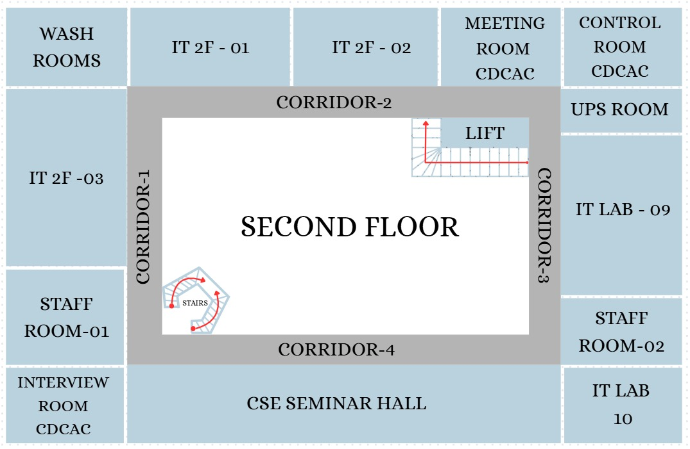

Node
Path Node
Start
End
Choose Route
Tip: pick any two rooms, labs, or corridor nodes to see the route.
Path Details
Select a start and destination.

Tip: pick any two rooms, labs, or corridor nodes to see the route.